Pearl of Fortune
Five clams. Four bonus features. One mermaid who plays along.
Concept
A portrait 5×3 land-based video slot for 43-inch cabinets. Beneath the ocean, five clams wait for pearls and each one guards a different treasure. A Pearl landing on a reel fills that reel's clam, up to three, and a full clam launches its feature: Lucky Wheel, Wild Respin (left or right), Free Spins with a Bubble Bonus, or Pick Bonus. The Mermaid is an active mechanic: her Blessing appears during features and always improves the outcome. Four static jackpots (Mini 50×, Minor 100×, Major 250×, Grand 500×) sit above the reels.
My role
Principal designer from theme and feature ideation through the GDD, flowcharts, UI wireframes and a playable HTML5 prototype (800×1600) used to test the collector loop and pacing of the features.
Prototype screens
Captured from the HTML5 prototype. It is built to test the feature loop, not to be a finished product.
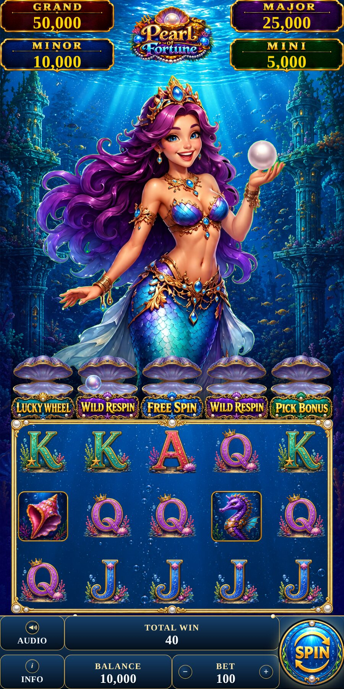
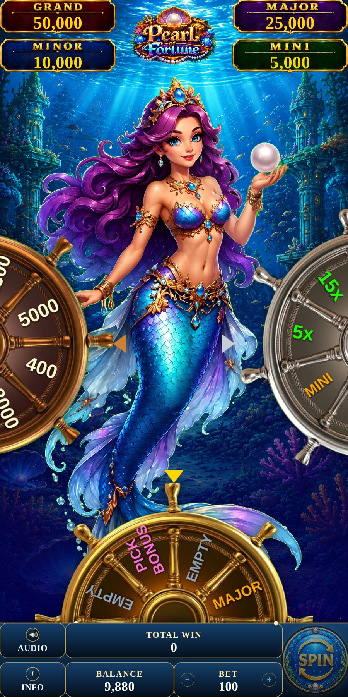
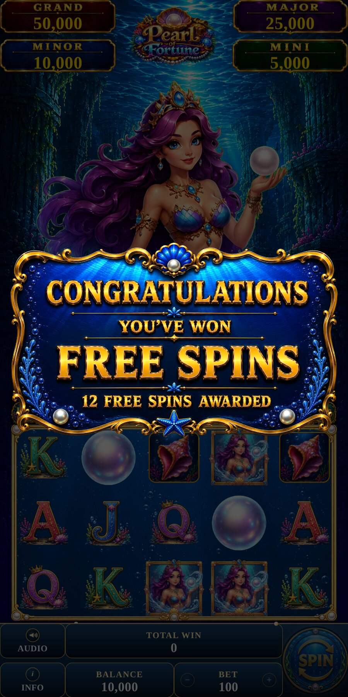
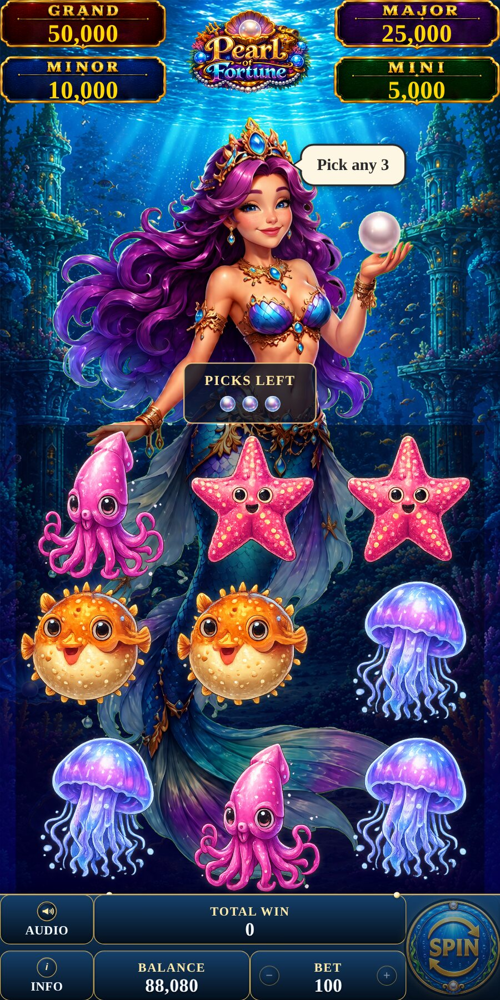
Making persistence readable on a cabinet
The design question: how do you give a slot player a reason to care about the spin they just lost, without hiding the rules on a help screen? Every decision below answers that.
- 01
Write the pillars first
DecisionFive pillars: Visible Progression, Feature Variety, Seamless Feature Flow, Strong Character Identity and Land-Based First Design.
WhyThey were the test for every later decision. If a feature did not make progress more visible, more varied, better connected or more readable on a cabinet, it did not belong.
- 02
Give every reel a job
DecisionFive collectors, one per reel, sitting between the mermaid and the reels: Lucky Wheel, Wild Respin (left), Free Spins, Wild Respin (right) and Pick Bonus.
WhyA Pearl matters wherever it lands, and the player always knows what it is for. Progress lives next to the reels, so the build-up is visible without reading anything.
Trade-offFive meters means more to look at. I kept each one to three pips so the screen stays calm.
- 03
Cap the build-up at +1 per spin
DecisionA Pearl anywhere on a reel gives that reel's collector at most +1 per spin.
WhyIt keeps the pace of features predictable. A lucky spin cannot skip the anticipation, and a collector always takes at least three spins to fill, which is the rhythm I was designing for.
Trade-offHot streaks feel a little tamer. The predictability is worth it for tuning.
- 04
Three pips, instant reset
DecisionEach collector holds three pearls and resets itself to 0/3 after about a second, without waiting for another Pearl.
WhyA short meter keeps the goal close. The auto-reset removes a dead state where a full collector just sits there, and the feature fires the moment it is earned.
Trade-offShort meters push the feature rewards to carry more of the excitement, so the five features had to feel different from each other.
- 05
Five features, five feelings
DecisionLucky Wheel and the two Wild Respins are quick; Free Spins is the long one; Pick Bonus hands the player a choice. Left and right respins are mirrors.
WhyIf every collector paid the same kind of reward, they would blur together. Quick, long and chosen features give the session a rhythm of small and big moments.
- 06
Keep the Pearl single-purpose
DecisionThe Pearl has no line payout, and the Wild substitutes for every paying symbol except the Pearl.
WhyOne symbol, one job. The Pearl is purely about collecting, and the Wild cannot accidentally do the collector's work.
Trade-offThe Pearl looks dead on a payline. The collector bar answers that visibly.
- 07
Prove the loop in play first
DecisionI built the HTML5 prototype at the cabinet's 800×1600 portrait ratio to test the collector loop and pacing, with every version playable and no half-built systems.
WhyPacing cannot be judged on paper. A playable build after every change meant I could feel whether three pips was too few before the art was final.
- 08
Let the Mermaid act
DecisionMermaid's Blessing appears at random during features and always improves the outcome, but only upgrades: it never changes a prize type. One Collector can trigger a bonus per spin.
WhyGiving the character a mechanical role makes her worth watching, and an upgrade-only rule means her appearance is always good news without breaking the prize ladder. One trigger per spin keeps features from stacking into a confusing pile.
Design documentation
Pitch deck pages and the game-flow chart shown here. The playable build above is the proof.
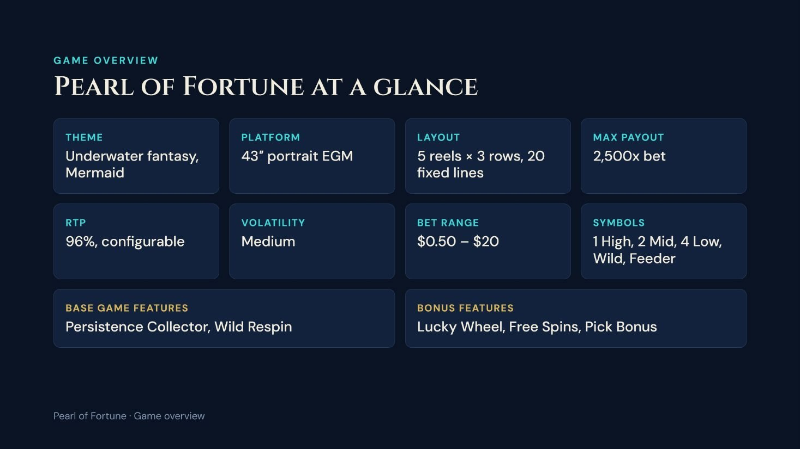
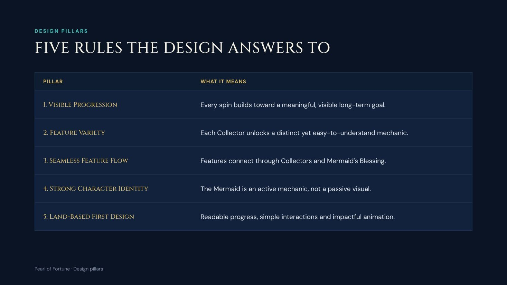
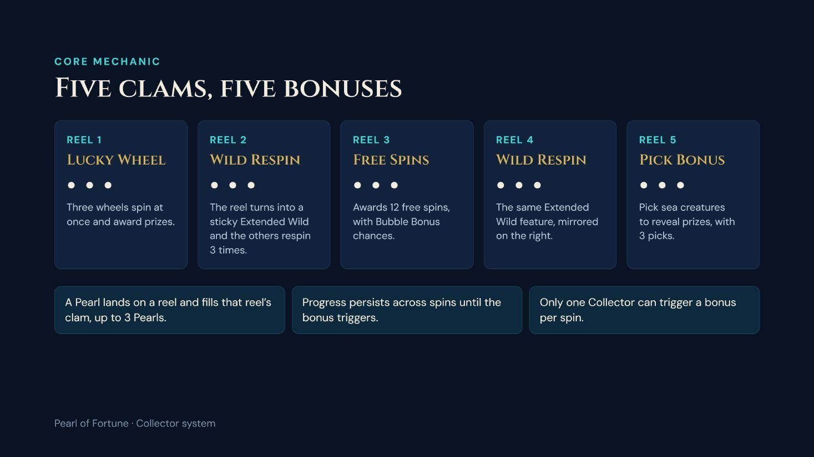
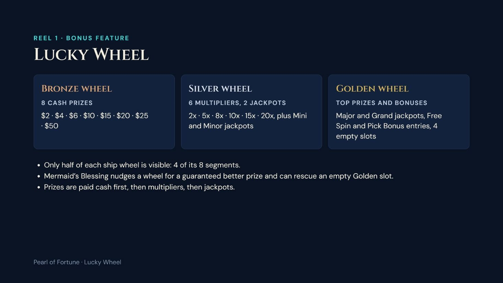
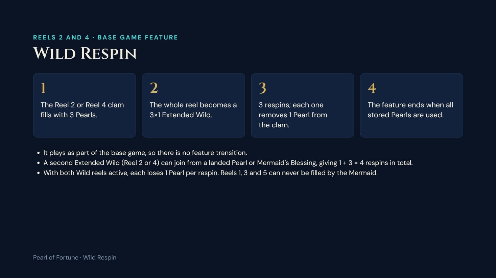
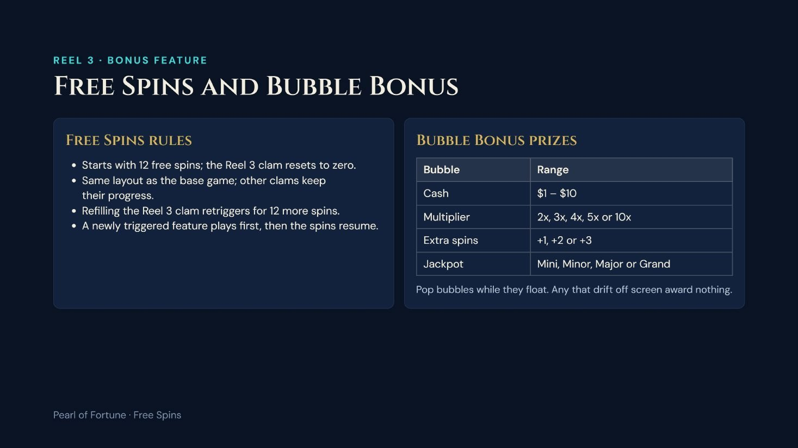
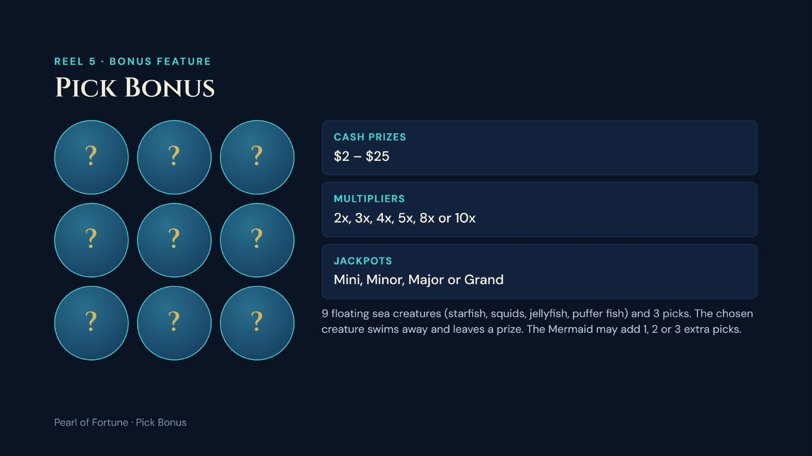
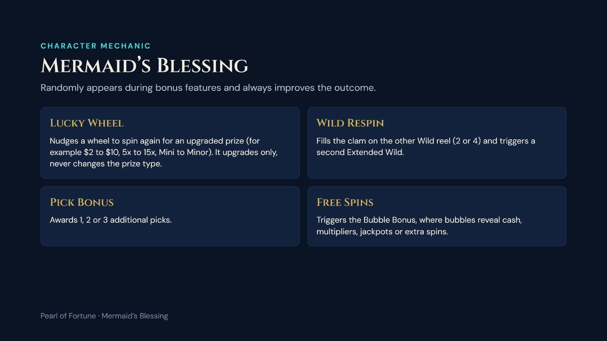
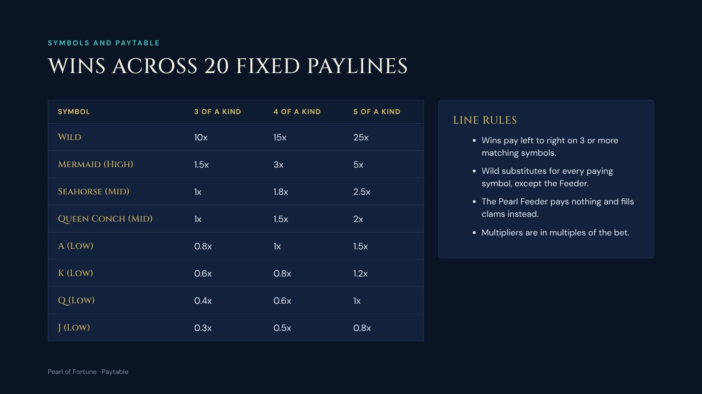
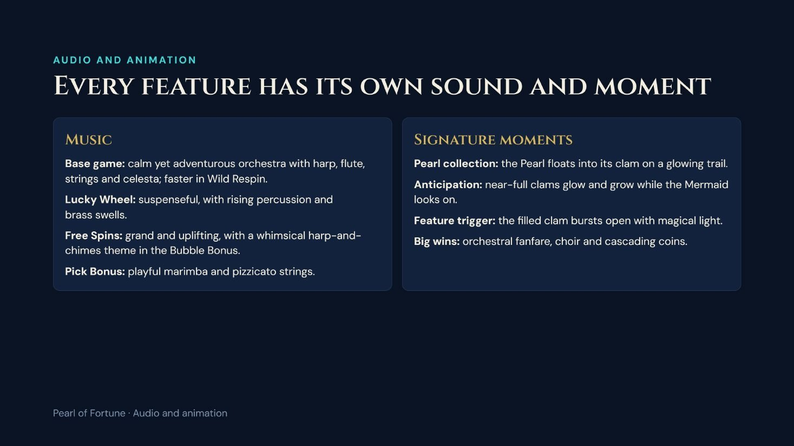
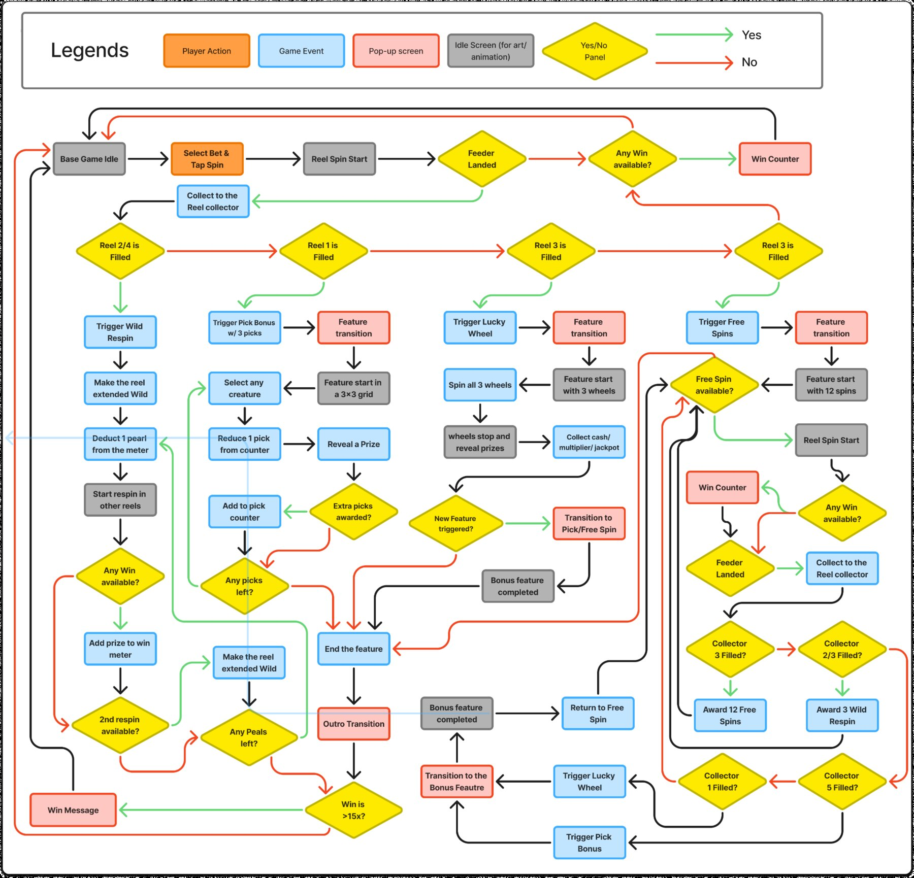
Beneath the ocean, five clams wait for pearls
The Mermaid guards the ocean's treasures, and her blessings enhance the bonus features. Five rules the design answers to:
| Pillar | What it means |
|---|---|
| Visible Progression | Every spin builds toward a visible long-term goal. |
| Feature Variety | Each Collector unlocks a distinct, easy-to-understand mechanic. |
| Seamless Feature Flow | Features connect through Collectors and Mermaid's Blessing. |
| Character Identity | The Mermaid is an active mechanic, not a passive visual. |
| Land-Based First | Readable progress, simple interactions, impactful animation. |
Five clams, five bonuses
A Pearl landing on a reel fills that reel's clam, up to 3. Progress persists until the bonus triggers, and only one Collector can trigger per spin.
| Reel | Feature | How it plays |
|---|---|---|
| 1 | Lucky Wheel | Three ship wheels (cash, multipliers, jackpots) spin at once. |
| 2 and 4 | Wild Respin | The reel becomes a sticky Extended Wild and the others respin 3 times. It plays in the base game, with no transition. |
| 3 | Free Spins | 12 free spins with a Bubble Bonus: pop floating bubbles for cash, multipliers, extra spins or jackpots. Refilling the clam retriggers. |
| 5 | Pick Bonus | Nine floating sea creatures, 3 picks, each leaving a prize. |
| Mermaid | Blessing | Appears at random and only ever improves the outcome: a better wheel prize, a second Extended Wild, extra picks, or the Bubble Bonus. |
Four static jackpots and a 20-line paytable
Jackpots (Mini 50×, Minor 100×, Major 250×, Grand 500×) can only be won in the Lucky Wheel, Pick Bonus and Free Spins. Wins pay left to right on 3 or more symbols; the Wild substitutes for everything except the Pearl Feeder, which pays nothing and fills clams instead.
| Symbol | 3 | 4 | 5 |
|---|---|---|---|
| Wild | 10× | 15× | 25× |
| Mermaid (High) | 1.5× | 3× | 5× |
| Seahorse, Queen Conch (Mid) | 1× | 1.5–1.8× | 2–2.5× |
| A, K, Q, J (Low) | 0.3–0.8× | 0.5–1× | 0.8–1.5× |
Where the 96% RTP comes from
| Source | Share of RTP | Frequency |
|---|---|---|
| Base game | ~40% | Wins about 1 in 5 spins |
| Free Spins | ~25% | 1 in 500 spins |
| Lucky Wheel | ~18% | 1 in 333 spins |
| Pick Bonus | ~13% | 1 in 200 spins |
A premium, glowing underwater world
Stylized fantasy with coral palaces, a sunken pirate ship, a pearl-lit sanctuary and a coral garden, in ocean blue, turquoise, emerald, coral pink, pearl white and gold. Each feature has its own music, from a calm harp-and-celesta base game to suspenseful brass for the wheel and playful marimba for the Pick Bonus.
Screens, flows and layout
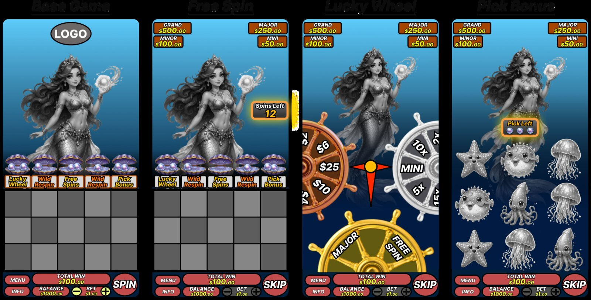
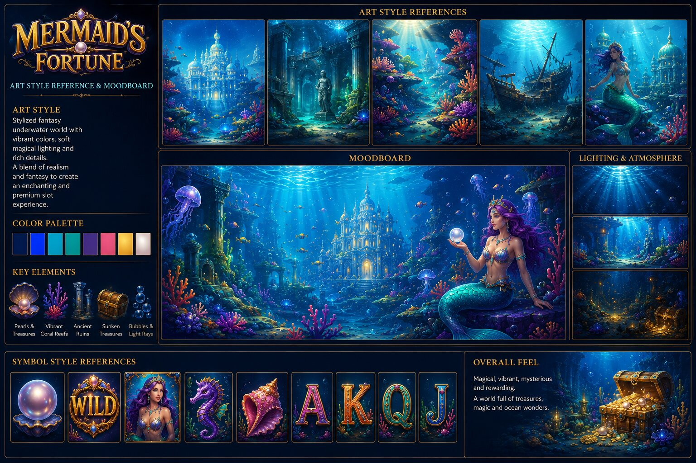
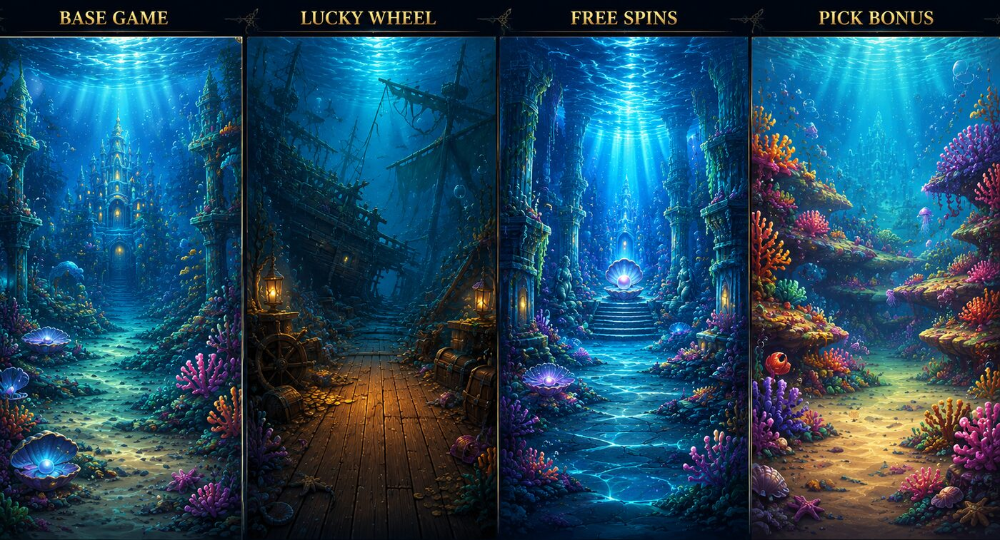